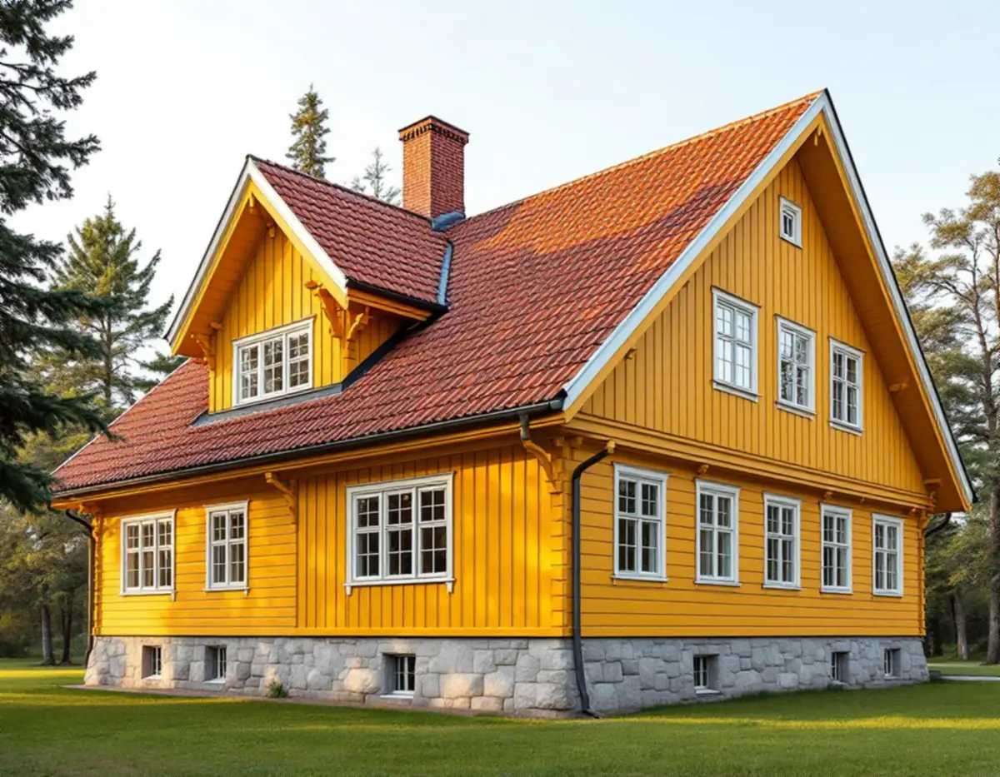
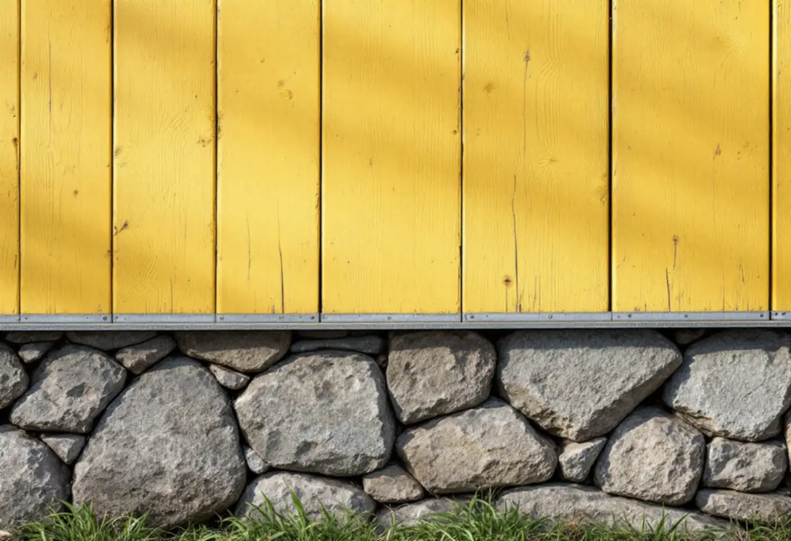

Kartan först
Vi tittar i kulturmiljökartan och detaljplanen så att vi vet vilket område och vilka bestämmelser huset omfattas av.
I Djursholm finns bebyggelse från 1890-talet till 1970-talet, och kommunen vill att alla de årsringarna ska gå att läsa även i framtiden. För en fasadrenovering betyder det att materialet på väggen ofta väger lika tungt som kulören. Geal Entreprenad AB renoverar fasader i Djursholm, Stocksund, Enebyberg och övriga Danderyd, med gratis platsbesök och skriftligt kostnadsförslag.

I kommunens riktlinjer för kulturmiljöhistoriska byggnader och miljöer från 2024 återkommer samma formulering för område efter område: bebyggelsen bör behålla sin utformning mot gatan när det gäller husens placering på tomten, volymverkan och fasadmaterial. Det gäller bland annat funktionalismen i Klingsta, egnahemmen i Klingsta och Enebyberg, de tidiga villastäderna Ekeby och Svalnäs i Djursholm och 1940- och 50-talens bebyggelse i Söderskogen.
Riktlinjerna säger också att byggnadernas ursprungliga arkitektoniska uttryck ska vara vägledande vid om- och tillbyggnad, och att fönster och portar i originalutförande ska värnas. För det moderna Danderyd skriver kommunen att främmande fasaduttryck som inte tillhör periodens stilideal bör undvikas.
Ett byte från puts till panel, eller från en smal profil till en bred, är alltså inte en neutral åtgärd i Danderyd även om själva arbetet är rutin. Vi börjar därför med att ta reda på vilket område huset ligger i och vad som står om just det området.

Kulturmiljöhandboken beskriver kvarteret Vale norr om Danderydsvägen som ett exempel på hur fasaden blir en del av skyddet. Köpingen lät 1907 uppföra fyra tvåfamiljshus och två enfamiljshus där för den arbetskraft som behövdes i Djursholm. Husen är enkla trävillor i en och en halv våning med drag av nationalromantik och jugend, och handboken anger materialen punkt för punkt: panel på förvandring, traditionell färgsättning med gul oljefärg, grunder av huggen natursten och tak av tvåkupigt rött lertegel.
Detaljplanen för Vale är från 1985 och alla byggnader omfattas av en q-bestämmelse. När en fasad är beskriven så noga är det rimligt att arbeta på samma sätt: byta skadade brädor mot virke med samma dimension och profil, behålla förvandringen där den håller och se till att panelen slutar på samma avstånd från stengrunden som tidigare.
Samma tänkesätt fungerar i många av Djursholms äldre villor, även där inget q står i planen. Handboken uppmanar till att underhålla varsamt med traditionella material och metoder, och att försöka rätta till olämpliga förändringar som gjorts under senare tid.
Boverket beskriver fasadens viktigaste uppgift som att hindra nederbörd från att tränga in i byggnaden. De känsliga punkterna är anslutningarna: mot fönster och dörrar, vid infästningar av stuprör och där olika byggdelar möts. Där behövs enligt Boverket tätning i mer än en nivå, så kallad tvåstegstätning, för att vatten som kommer förbi det yttre skiktet ska kunna rinna ut igen.
På en villa med stengrund och träpanel sitter skadorna därför ofta längst ner, där regnstänk från marken når brädornas ändträ, och under fönsterbleck som har för litet fall. Vid besöket petar vi i panelen med en syl i de lägena och tittar på hur blecken är vinklade. Fönster i originalutförande renoveras hellre än byts, i linje med riktlinjerna, och det kan målare i Danderyd hjälpa till med.
Boverket varnar också för att täta plastfärger på träpanel har gett fuktskador när rätt grundfärg saknats. När vi lagar panel stämmer vi därför av vilken färgtyp som finns på huset innan nytt virke grundas.
Från den 1 december 2025 gäller att det normalt inte behövs bygglov för att byta kulör eller fasadmaterial på ett en- eller tvåbostadshus. Boverket skriver att det inte heller krävs lov för andra ändringar som påverkar husets karaktärsdrag. Undantaget är utökad lovplikt, bland annat för byggnader som omfattas av skyddsbestämmelser i detaljplan och för särskilt värdefulla byggnader och områden.
Danderyds kommun skriver att bygglov krävs om fastigheten ligger inom ett kulturhistoriskt särskilt värdefullt område, om byggnaden i sig är särskilt värdefull eller om den ligger inom riksintresse för kulturmiljövården. Om fastigheten berörs syns i kommunens kulturmiljökarta, och kommunen erbjuder rådgivning. Den som vill ha ett formellt besked kan söka frivilligt bygglov även för en lovfri åtgärd.
Även utan lov gäller varsamhetskravet. Ett byte av panelprofil eller en utvändig tilläggsisolering på ett hus i ett utpekat område bör därför stämmas av med kommunen innan material beställs.
Vi tittar i kulturmiljökartan och detaljplanen så att vi vet vilket område och vilka bestämmelser huset omfattas av.
Panel, förvandring, grund, fönsteranslutningar och bleck kontrolleras, och vi tar mått på befintliga profiler.
Lagning, byte och eventuell isolering prissätts var för sig i ett skriftligt förslag.
Om huset ligger i ett värdefullt område stämmer vi av lovfrågan innan arbetet planeras.
Skadat virke byts mot samma dimension, anslutningar och bleck görs om och fasaden förbereds för målning.
Vi går runt huset tillsammans och visar vad som har bytts och varför.
Skatteverket räknar det som rotarbete i ett småhus att byta och reparera fasader, tilläggsisolera, måla fasader och reparera eller byta fönster. Även byggnadsställningar som monteras och tas ner i samband med rotarbetet ger avdrag.
Avdraget är 30 procent av arbetskostnaden, högst 50 000 kr per person och år och högst 75 000 kr tillsammans med rutavdrag. Material, resor och maskiner ingår inte. Geal drar avdraget direkt på fakturan.
Hur mycket panel som behöver bytas, om profilen måste specialbeställas för att stämma med den gamla, skicket på förvandring och vattbrädor och hur många fönsteranslutningar som ska göras om. Stora tomter med uppvuxna träd påverkar hur ställningen kan stå. Du får ett skriftligt kostnadsförslag efter ett gratis platsbesök.
Puts, panel och tilläggsisolering.
Fasadrenovering i Stockholm →Takbyte, takbesiktning och plåtarbeten.
Takläggare i Danderyd →Djursholm, Stocksund och Enebyberg.
Takrenovering i Danderyd →Tillbyggnad, tomt och kommunens riktlinjer.
Byggföretag i Danderyd →Villastäder, ritningar och ventilation.
Badrumsrenovering i Danderyd →Lovplikt, klassning och spröjs i Danderyd.
Fönsterbyte i Danderyd →Originalgolv i villor från 1890-talet och framåt.
Golvläggare i Danderyd →Villastäder, egnahem och kommunens regler.
Köksrenovering i Danderyd →Villor, egnahem och grupphus i Danderyd.
Målare i Danderyd →Rännor, stuprör och beslag i Danderyd.
Plåtslagare i Danderyd →Altaner, staket och carport.
Snickare i Danderyd →Villastaden, takmaterial och solceller.
Takbyte i Danderyd →